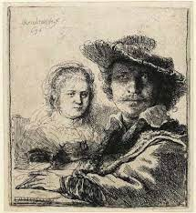

087. Self-Portrait with Saskia. Rembrandt van Rijn. 1636 CE. Etching
- Content
- Rembrandt is seen drawing or perhaps making and watching
- Saskia is seated deeper into the work, but is very noticeable because she is portrayed with a lighter touch
- Function
- Not for general sale but for private purposes
- Context
- The scene depicts the 30-year-old Rembrandt with his new bride.
- This is the only image of Rembrandt with his wife together in an etching
- Images of Saskia are abundant in Rembrandt’s output; she was a source of inspiration for him
- Martial harmony; Saskia as a muse who inspires him
- Characteristic of Rembrandt: they are wearing fanciful, not contemporary, dress
- Saskia was the mother of 4
- Rembrandt’s self-portraits included 50 paintings, 32 etchings, and 7 drawings